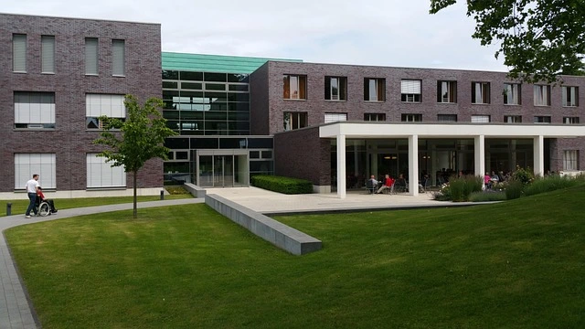

Welcome!
Welcome to Point of the Mountain Physical Therapy! We are dedicated to helping you recover, rebuild, and regain your strength. Our experienced team of licensed physical therapists provides personalized care tailored to your unique needs. Whether you're recovering from an injury, managing chronic pain, or looking to improve your mobility, we're here to support you every step of the way. Let us help you get back to doing what you love.
Meet our staff:
Location:
1234 Ridgecrest Way, Suite 200
Draper, UT 84020
(801) 555-0123
Hours:
Monday: 9am-5pm
Tuesday: 9am-5pm
Wednesday: 9am-5pm
Thursday: 9am-5pm
Friday: 9am-5pm
Saturday: closed
Sunday: closed